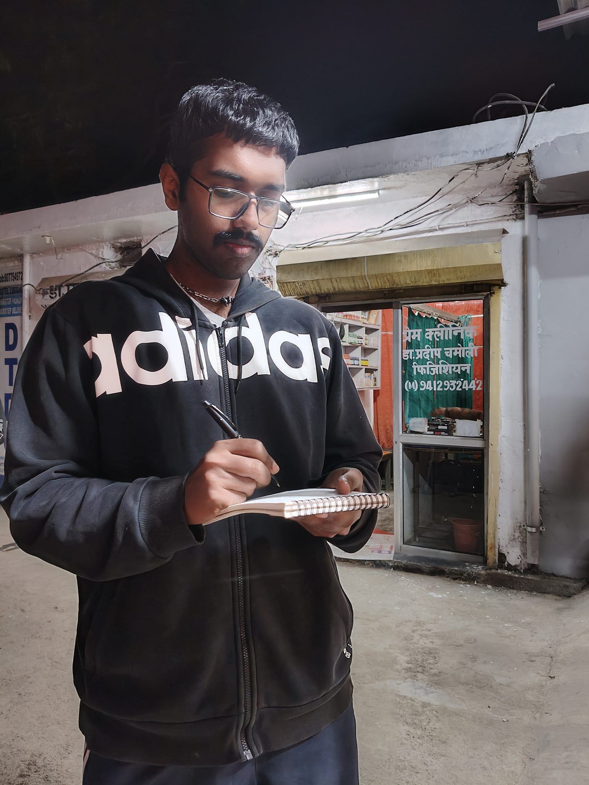
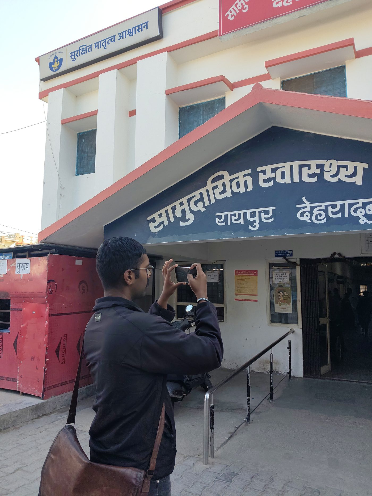
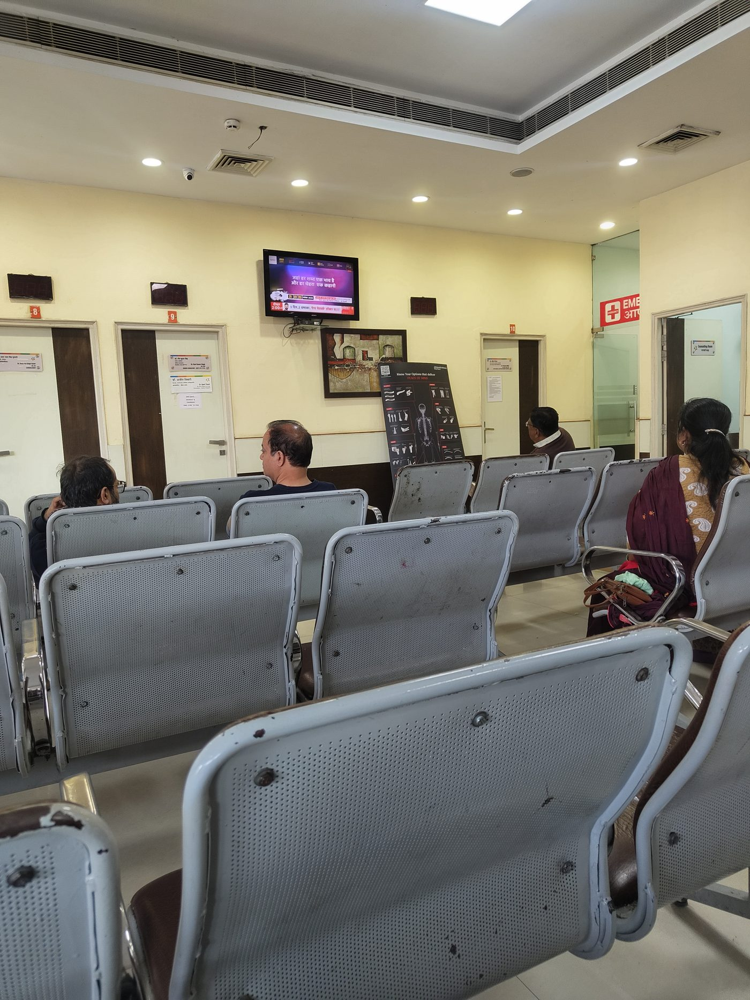
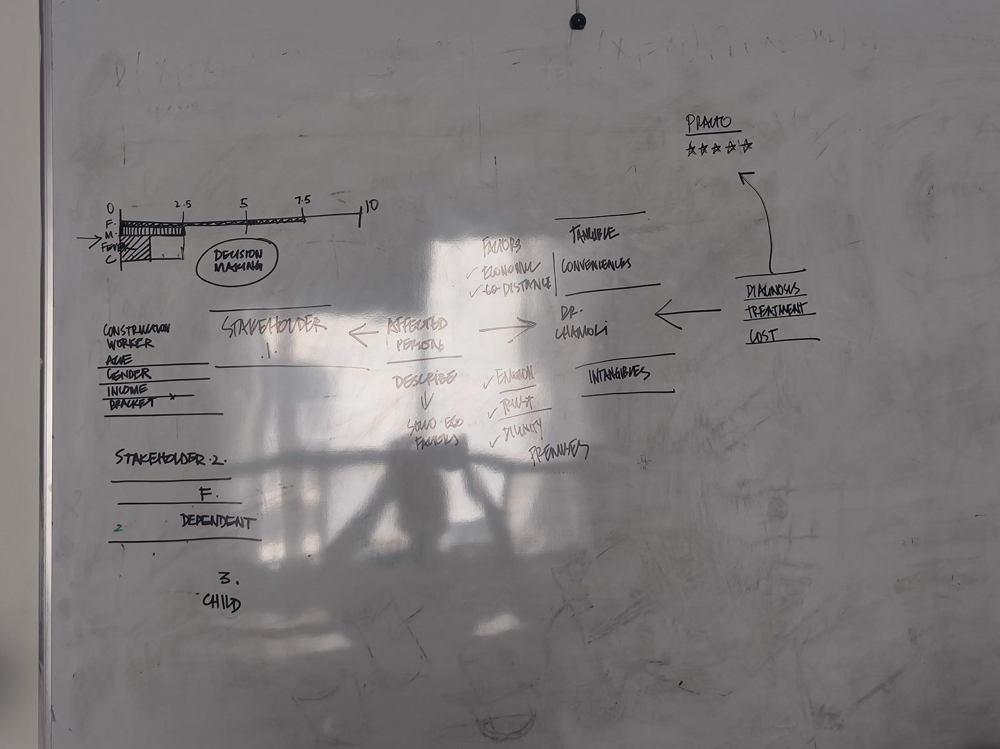

- Role
- Fieldwork with classmates; the concept, flows and UI are mine
- Course
- Designing for social needs, UPES Dehradun
- Timeline and methods
- Nov – Dec 2025: street and site interviews, a clinic doctor, an ASHA questionnaire, two facility visits, desk research
In Dehradun’s bastis (informal settlements), a fever is often waited out, because every route to care costs a day’s wage or cash. ASHA Companion turns the ASHA, the government health worker who already visits these homes, into a first responder, backed by a doctor she doesn’t have to wait for.
The case study follows a house call: the history, the diagnosis, then the prescription.
Take the history before you prescribe.
Where do people go when they fall sick, and what does getting there cost them?
We listened where people fall sick, not only where they get treated
Construction sites, a basti clinic at night, a government health centre and a private hospital’s waiting room.




Care starts at home, and every ring outward costs more
Who people turn to first, in the order they described it. The ASHA lives in the second ring, but nobody named her as someone who treats.
The distance to care
{{ ringSel.money }}
{{ ringSel.time }}
{{ ringSel.note }}
Free care stops being free once you count the day it takes
For a daily-wage worker, the government centre is paid for in time, the basti clinic in cash, and waiting costs nothing until it does.
The bill for one fever
CashWage lost to timeOne hospital admission costs an urban family about ₹6,800, about fourteen days’ wages.
The doctor is the scarcest thing in the system
The norm is one doctor for every thousand people. In Uttarakhand, each government doctor serves almost eight times that, and the hills are emptier still.
Dehradun district is 45% short of specialists, and its Chief Medical Officer has called the local health centres “referral centres”.
Someone already visits every home, and she spends the visit on paperwork
India pays an ASHA (Accredited Social Health Activist) from each community to visit its households. We asked 22 of them about their day, their apps and what they feel allowed to do.
The register
22 ASHA respondentsThe system already pays someone to visit every home. It never let her decide anything.
Name the condition before you treat it.
If doctors can’t be added, what can the person at the door safely do?
I can’t add doctors, so each doctor’s minute has to go further
eSanjeevani, the government’s teleconsult app, already exists. It asks the patient and the doctor to be online at the same moment, which the hills rarely allow.
From data clerk to health navigator
The same visit, the same woman, a different job description.
Write a prescription she can follow.
An extension to eSanjeevani, offline and in Hindi, built around one house call.
Every part of the prescription answers a symptom we heard
Five symptoms from the fieldwork, five parts of the design. Nothing in the app exists without one.
One house call, from knock to verdict
Step through the five screens as the ASHA would. Each one says which part of the prescription it carries.
{{ stepSel.note }}
Two channels: solved at the door, or sent with a file
Every case leaves with a tag, like triage in an emergency ward. Green ends at home. Red travels to a doctor who never had to be online with her.
{{ t.d }}
- {{ s.k }}{{ s.v }}
The app’s most important job is saying no. A danger sign skips the kit and goes straight to the red channel.
Working thresholds would come from the state’s standing orders and a clinician, not from me.
The app is her rough notebook, and it writes the fair copy
Today she writes in the register during the visit, then types it all again into an app. Here, the taps become the register line.
What this house call can claim, and what it can’t yet
What I can’t claim yet
{{ c }}
The next visit
{{ c }}